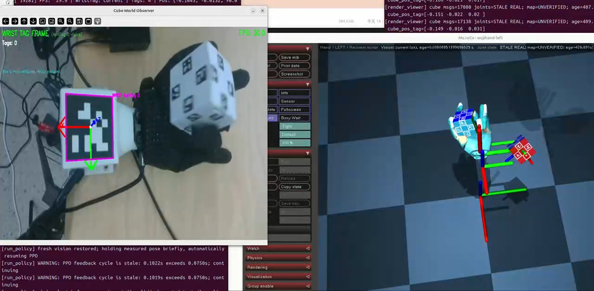

FIG. 01 / THE LEARNING LOOP观测 · 行动 · 反馈
01 / DEXTEROUS MANIPULATION02 / REINFORCEMENT LEARNING03 / VLA POST-TRAINING
PROJECT JOURNAL
项目专栏
从实验过程，到阶段性结果。

灵巧手 · 强化学习 · Sim-to-Real
灵巧手掌内方块重定位
围绕 PPO 策略训练、不同手型适配与真机部署，记录掌内操作的实验过程和工程实践。
演示视频、仿真训练成果、完整数据，以及技术方法与个人贡献，统一收录在项目专栏中。
进入项目专栏 →SELECTED WRITING
精选笔记
从具体问题出发，留下可复用的方法。
01
工程实践 · 本体适配
02把开源灵巧手策略迁移到另一种本体，需要检查什么？
从 Home 姿态和掌内方块重定位经验出发，检查初始任务难度，并比较迁移与从零训练。
阅读方法 · 源码理解
03如何快速读懂一个机器人学习代码库
追踪一条启动命令、一个 batch 和一次参数更新，建立训练、推理与评估的联系。
学习笔记 · VLA 后训练
04VLA 残差强化学习：改动作、控制噪声和微调有什么区别？
按接入位置、更新参数与学习信号拆解方法，分清看似相近的策略适配路线。
部署笔记 · 数据与纠正
π0.5 真机部署：数据要满足什么条件，什么时候用 DAgger？
检查物体与背景的可辨性、采集人入镜，以及 DAgger 接管前后动作的筛选与监督边界。
CURRENT QUESTIONS
正在探索
把问题写具体，再寻找证据。
ABOUT ME
你好，我是旺仔。
我是旺仔，机器人算法工程师，关注灵巧手强化学习、仿真到真机迁移，以及视觉语言动作模型（VLA）的后训练。
我的实践主要围绕策略训练、本体适配与真机部署展开：阅读和复现开源方法，结合具体硬件调整训练设置，并通过实验排查策略表现与部署问题。目前重点推进灵巧手掌内操作，同时探索如何利用强化学习改善已有机器人策略。
这里记录我的项目实践、代码阅读和实验复盘，也分享尚未解决的问题。希望与关注机器人学习的朋友交流，把对算法的理解逐步转化为可验证的机器人能力。
github.com/hao00sun ↗